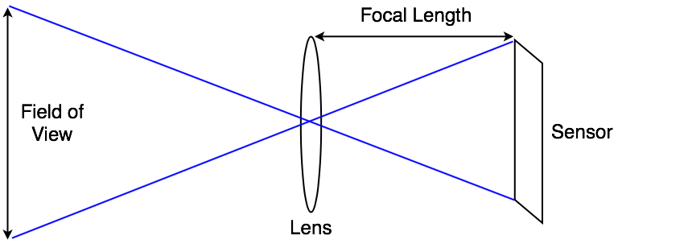

使用物理摄像机 (Physical Camera)
摄像机组件的 Physical Camera 属性在 Unity 摄像机上模拟真实摄像机格式。这可用于从同样模拟真实摄像机的 3D 建模应用程序导入摄像机信息。
Unity 提供的设置与大多数 3D 建模应用程序的物理摄像机设置相同。控制摄像机视野的两个主要属性是 Focal Length 和 Sensor Size。
-
Focal Length：传感器和摄像机镜头之间的距离，即焦距。此属性决定了垂直视野。Unity 摄像机处于 Physical Camera 模式时，改变 Focal Length 也会相应改变视野。焦距越小，视野越大，反之亦然。
 摄像机焦距、视野和传感器尺寸之间的关系 Sensor Size：捕捉图像的传感器的宽度和高度，表示传感器大小。这些数值决定了物理摄像机的宽高比。可从对应于真实摄像机格式的几个预设传感器大小中进行选择，或设置自定义大小。传感器宽高比与渲染的宽高比（在 Game 视图中设置）不同时，可以控制 Unity 如何将摄像机图像与渲染的图像匹配（请参阅下文中关于 Gate Fit 的信息）。
Lens Shift
Lens Shift 从传感器水平和垂直偏移摄像机的镜头。这样一来便可以改变焦点中心，并在渲染的帧中重新定位拍摄对象，确保很少或完全没有失真。
这种方法在建筑摄影中很常见。例如，如果要拍摄一座高楼，可以旋转摄像机。但这会使图像失真，导致平行线看起来发生会聚。
如果把镜头上移，而不是旋转摄像机，就可以改变构图以包含楼顶，但平行线保持直线。
同样，可以使用水平镜头位移方法来拍摄宽大的对象，避免由于旋转摄像机而可能产生的失真。

镜头移位 (Lens Shift) 和视锥体倾斜
镜头移位的一个副作用是会使摄像机的视锥体倾斜。这意味着摄像机的中心线与其视锥体之间的角度在一侧要小于另一侧。
此功能可用于根据视角来创造视觉效果。例如，在赛车游戏中，可能希望将视角保持在接近地面的较低位置。镜头移位是一种不用脚本即可实现视锥体倾斜的方式。
有关更多信息，请参阅关于使用斜视锥体的文档。
Gate Fit
Camera 组件的 Gate Fit 属性决定了 Game 视图和物理摄像机传感器具有不同宽高比时会发生什么情况。
在 Physical Camera 模式中，一个摄像机有两个“门”。
根据 Aspect 下拉菜单中设置的分辨率在 Game 视图中渲染的区域被称为“分辨率门”。
摄像机实际看到的区域（由 Sensor Size 属性定义）被称为“胶片门”。
两个门具有不同宽高比时，Unity 让分辨率门“适应”胶片门。有几种适应模式，但是这些模式都会产生以下三种结果之一。
- 裁剪 (Cropping)：适应后，胶片门超过分辨率门时，Game 视图在满足宽高比的情况下渲染尽可能多的摄像机图像面积，并裁掉其余部分。
- 过扫描 (Overscanning)：适应后，胶片门超过分辨率门时，Game 视图仍然对摄像机视野之外的场景部分进行渲染计算。
- 拉伸 (Stretching)：Game 视图渲染完整的摄像机图像，将其水平或垂直拉伸以适应宽高比。
要在 Scene 视图中查看这些门，并查看它们如何相互适应，请选择摄像机并查看其视锥体。分辨率门是摄像机远裁剪面。胶片门是位于视锥体底部的第二个矩形。

Gate Fit 模式
选择的 Gate Fit 模式决定了 Unity 如何调整分辨率门的大小（因而调整摄像机的视锥体）。胶片门始终保持相同大小。
以下部分提供了关于每种 Gate Fit 模式的更多详细信息。
Vertical
Gate Fit 设置为 Vertical 时，Unity 让分辨率门适应胶片门的高度（Y 轴）。对传感器宽度 (Sensor Size > X) 进行的任何更改都不会影响渲染的图像。
如果传感器宽高比大于 Game 视图宽高比，Unity 会在两侧裁剪渲染的图像：
如果传感器宽高比小于 Game 视图宽高比，Unity 会在两侧对渲染的图像进行过扫描：
Horizontal
Gate Fit 设置为 Horizontal 时，Unity 让分辨率门适应胶片门的宽度（X 轴）。对传感器高度 (Sensor Size > Y) 进行的任何更改都不会影响渲染的图像。
如果传感器宽高比大于 Game 视图宽高比，Unity 会在顶部和底部对渲染的图像进行过扫描：
如果传感器宽高比小于 Game 视图宽高比，则会在顶部和底部裁剪渲染的图像。
None
Gate Fit 设置为 None 时，Unity 让分辨率门适应胶片门的宽度和高度（X 轴和 Y 轴）。Unity 会拉伸渲染的图像以适应 Game 视图宽高比。

Fill 和 Overscan
Gate Fit 设置为 Fill 或 Overscan 时，Unity 根据分辨率门和胶片门的宽高比，自动进行垂直或水平适应。
- Fill 让分辨率门适应胶片门的较小轴，并裁剪摄像机图像的其余部分。
- Overscan 让分辨率门适应胶片门的较大轴，并对摄像机图像边界以外的区域进行过扫描。
2018–10–05 页面已修订
在 2018.2 版中添加了 Physical Camera 选项 NewIn20182
在 Unity 2018.3 中添加了 Gate Fit 选项